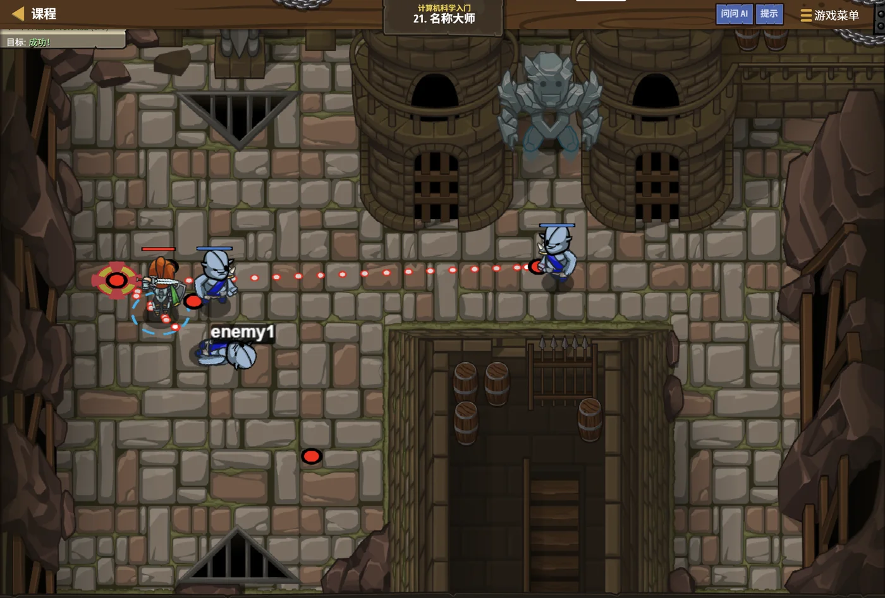

故事：岗哨名册上一排排名字，每一个都对应一只箱子。
安雅指着册子说：先把名字登记好，才能往里放东西。
你发现，如果名字写错一个字，整本名册都会报错——
这正是 C++ 里"变量必须先声明、命名必须合法"的道理。
扣哒考级 · GESP C++ 一级 · 第 2 单元 | 烛火岗哨 CANDLEWATCH OUTPOST
会记事的木箱 变量、常量与数据类型
Variables, Constants & Types

安雅
红发队长 · 你的向导
岗哨的储藏室里堆着一排木箱，箱盖上贴着发光的名牌：有的写着"金条"，有的写着"药草"。
安雅随手打开一只箱子，把里面的数字牌从 3 换成了 7，又合上盖子。
箱子还是那只箱子，名字没变，里面的东西变了。她说， 程序里最重要的东西，就是这个——能装东西、还能换东西的箱子。
安雅随手打开一只箱子，把里面的数字牌从 3 换成了 7，又合上盖子。
箱子还是那只箱子，名字没变，里面的东西变了。她说， 程序里最重要的东西，就是这个——能装东西、还能换东西的箱子。
安雅 · 红发队长
这个"箱子"就叫变量。它是编程里最基础、也最常考的一块砖。而 C++ 的箱子有个特别之处：你必须先说清楚"这只箱子装什么类型的东西"，才能用它。
这就是 C++ 和其他语言最不一样的地方之一。
assets/illustrations/py-L1-02-01_named_chest.webp
【配图位】岗哨储藏室里的一只木箱，箱盖上贴着发光的名牌；箱内的数字牌正从 3 换成 7（一名新兵正在替换内容）；旁边一只上锁的箱子代表常量；火光下的木架背景。
0 单元导语与目标
Unit Overview
0.1 学习目标
1学完这个单元，你将能……
- 说清变量是什么、为什么必须先声明类型
- 正确写出变量的声明、赋值与读取
- 掌握变量命名规则，避开关键字
- 分辨 C++ 的整型、浮点型、字符型、布尔型
- 用
const定义常量，并说清它和变量的区别 - 看懂并预测类型转换的结果
2对标 GESP 考纲（C++ 一级）
- 掌握变量的概念、定义与使用
- 掌握基本数据类型：整型、浮点型、字符型、布尔型
- 掌握常量的概念与
const的用法 - 了解不同类型之间的转换规则
- 考核目标：能正确定义变量、判断类型转换后的结果
0.2 考纲对照
| 本单元小节 | 对应考纲条目 | 真题常考形式 |
|---|---|---|
| 1 变量的声明与使用 | 变量的概念与定义 | 给一段代码，问输出的两个变量分别是几 |
| 2 基本数据类型 | 整型、浮点型、字符型、布尔型 | 给一个数，问该用什么类型；或问某类型的范围 |
| 3 常量 | 常量的概念 | const 声明的变量能不能再赋值 |
| 4 类型转换 | 数据类型转换 | 整数除法、赋值给 int 之后的输出结果 |
1 会记事的木箱
Variables
1.1 先声明，再使用
安雅把一只空箱子推到你面前："用之前，先在箱盖上写清楚它装什么。"
声明一只整型箱子
C++
int gold; // 声明：告诉编译器，gold 是一只装整数的箱子
gold = 100; // 赋值：把 100 放进这只箱子
cout << gold; // 读取：把箱子里的东西拿出来用
int herb = 25; // 也可以声明的同时就放东西（这叫"初始化"）OUTPUT 100
图 2（SVG）：变量、名字、类型与值的关系
打个比方：
驿站里的每一只箱子，箱盖上都要先贴一张名牌，写上"这箱装整数""那箱装小数"。
不贴名牌会怎样？搬运工不知道往里放什么，也不知道该拿什么出来，只能停下不干。
C++ 的变量就是这样：先声明类型，等于先贴好名牌，之后才能使用。
不贴名牌会怎样？搬运工不知道往里放什么，也不知道该拿什么出来，只能停下不干。
C++ 的变量就是这样：先声明类型，等于先贴好名牌，之后才能使用。
C++ 的第一条铁律：
变量必须先声明类型，才能使用。
没有这一句，后面直接写
int gold; 的意思是："请给我留一格能装整数的内存，取名叫 gold。"没有这一句，后面直接写
gold = 100; 编译器就会报错：找不到 gold。
1.2 变量的三个动作
用一只箱子，其实只有三个动作，记住这三步，变量就学会了一大半。
assets/illustrations/cpp-L1-02-03_three_actions.webp
【配图位】驿站储藏室里的一只木箱，画面分成左中右三个小场景：左边一名新兵在箱盖上贴写有"int"的发光名牌（声明）；中间他把一块写着数字的牌子放进箱子（赋值）；右边他伸手从箱子里把牌子取出来递给同伴（读取）。三个场景之间有箭头相连，箱子里始终可见同一个数字。扣哒世界卡通风格。
| 动作 | 写法 | 含义 |
|---|---|---|
| 声明 | int a; | 申请一格内存，起个名字，说好装什么类型 |
| 赋值 | a = 5; | 把右边的值放进左边这只箱子 |
| 读取 | cout << a; | 把箱子里的值取出来用 |
| 初始化 | int a = 5; | 声明的同时就放好值，最推荐 |
经典考题：b 会不会跟着 a 一起变？
C++
int a = 3;
int b = a; // 把 a 当时的值（3）复制一份给 b
a = 4; // 改的是 a，跟 b 没关系
cout << a << " " << b; // 4 3OUTPUT 4 3 ——b 仍然是 3
为什么 b 不会跟着变？
因为
之后 a 里换成 4，b 里那份 3 依旧在原地。
这道题在 C++ 一级真题里出现过，问的就是"输出是什么"。
int b = a; 做的是"把值抄一份过去"，不是"把两只箱子绑在一起"。之后 a 里换成 4，b 里那份 3 依旧在原地。
这道题在 C++ 一级真题里出现过，问的就是"输出是什么"。
1.3 命名规则
| 规则 | 说明 | 合法 / 非法 |
|---|---|---|
| 只能用字母、数字、下划线 | 不能用 +、-、空格、中文 | my_age ✔ my-age ✘ |
| 不能以数字开头 | 第一位必须是字母或下划线 | a1 ✔ 1a ✘ |
| 不能是关键字 | int、for、return 等已被占用 | for ✘ for1 ✔ |
| 区分大小写 | A 和 a 是两个不同的名字 | Sum 与 sum 是两个变量 |
打个比方：
给变量起名字，就像给同学起外号——可以起，但有规矩：
① 只能用字母、数字、下划线三种字符，不能带空格和加减号；
② 不能用数字开头，因为搬运工一看数字就以为那是数量，不是名字；
③ 不能跟 C++ 已经占用的词重名（比如
另外，C++ 分大小写：
① 只能用字母、数字、下划线三种字符，不能带空格和加减号；
② 不能用数字开头，因为搬运工一看数字就以为那是数量，不是名字；
③ 不能跟 C++ 已经占用的词重名（比如
int、for）。另外，C++ 分大小写：
Sum 和 sum 是两个完全不同的名字。
关于下划线的一个细节：
但以两个下划线开头、或以下划线加大写字母开头的名字是保留给编译器用的，自己不要这样命名。
_ 和 __（下划线数目不同）在 C++ 里是两个不同的名字，
一般不会"重复定义"。但以两个下划线开头、或以下划线加大写字母开头的名字是保留给编译器用的，自己不要这样命名。
2 C++ 的基本数据类型
Basic Data Types
2.1 整型：int 与 long long
装整数用 int；数太大就用 long long
C++
int a = 100; // 最常用，约 ±21 亿
int b = -7; // 负数也没问题
long long c = 10000000000LL; // 超过 int 范围时要用 long long
cout << c; // 10000000000要点
int 大约能装 21 亿以内的整数；再大就要用 long long| 类型 | 能装什么 | 大致范围 | 占多少字节 |
|---|---|---|---|
int | 整数 | 约 −21 亿 ~ +21 亿 | 4 |
long long | 更大的整数 | 约 ±9.2 × 1018 | 8 |
short | 小整数 | 约 −32768 ~ 32767 | 2 |
打个比方：
你硬要往里倒更多的水，多出来的部分就会洒出去——杯子里的水位不是你期望的数字。
所以题目里的数很大（比如超过十亿），就要换一只更大的杯子：
int 就像一只固定大小的杯子，最多只能装 21 亿这么多水。你硬要往里倒更多的水，多出来的部分就会洒出去——杯子里的水位不是你期望的数字。
所以题目里的数很大（比如超过十亿），就要换一只更大的杯子：
long long。
什么是"溢出"？
如果往
一级阶段记住一句话就够：整数默认用 int，题目里数很大（比如超过十亿）时改用 long long。
int 里塞一个超过它范围的值，结果就不再是你想要的那个数了——
这叫溢出。一级阶段记住一句话就够：整数默认用 int，题目里数很大（比如超过十亿）时改用 long long。
2.2 浮点型：float 与 double
装小数用浮点型
C++
float x = 3.5f; // 单精度，约 6~7 位有效数字
double y = 3.14159265; // 双精度，约 15~16 位有效数字，更常用
cout << y; // 3.14159要点 小数默认按
double 处理；想做高精度计算就用 double
浮点数不是"精确"的：
小数在计算机里是用近似值存的，可能出现
所以比较两个浮点数是否相等，一般不直接用
0.1 + 0.2 不等于 0.3 的情况。所以比较两个浮点数是否相等，一般不直接用
==，而是看它们的差是否足够小。
2.3 字符型 char
单个字符用单引号
C++
char grade = 'A'; // 单个字符：单引号
cout << grade; // A
char ch = 65; // 字符本质是一个编号，65 就是 'A'
cout << ch; // A关键区别
'A' 是字符；"A" 是字符串（含结束符，占两个字节）
单引号与双引号，绝对不能混：
把
'A' —— 字符，类型是 char。"A" —— 字符串，类型是字符数组 / string。把
'A' 写成 "A" 赋给 char，编译器会直接报错。
2.4 布尔型 bool
真与假
C++
bool flag = true; // 真
bool ok = false; // 假
cout << flag << " " << ok; // 1 0OUTPUT 1 0 ——输出时 true 显示为 1，false 显示为 0
bool 是干什么用的？
它专门用来记录"条件成不成立"，第 5 单元的分支结构会大量用到它。
记住：输出时 1 代表真、0 代表假；而任何非 0 的值都能当"真"来用。
记住：输出时 1 代表真、0 代表假；而任何非 0 的值都能当"真"来用。
2.5 五种类型对照
图 4（SVG）：五种基本数据类型一览
3 常量：不许改的箱子
Constants
3.1 字面量
直接写在代码里的值，叫字面量。它们本身就带着类型。
| 写法 | 类型 | 说明 |
|---|---|---|
100 | int | 不带点的整数默认是 int |
100LL | long long | 加后缀 LL 表示更大的整数 |
3.5 | double | 带小数点的默认是 double |
3.5f | float | 加后缀 f 表示单精度 |
'A' | char | 单引号包一个字符 |
true / false | bool | 布尔字面量 |
3.2 const 常量
有些箱子一旦放好东西，就不许再改——比如"一年有多少个月"。这类东西用 const 来保护。
打个比方：
而且上锁有个前提：必须先放好东西，才能锁上。
所以
const 就是给箱子上了一把锁——里面的东西能看见、能拿来用，但谁也改不了。而且上锁有个前提：必须先放好东西，才能锁上。
所以
const 常量必须在定义的同时就赋值，不能先声明、以后再补。
const：加了锁的箱子
C++
const int MONTHS = 12; // 定义常量，必须当场赋值
const double PI = 3.14159;
// MONTHS = 13; // 如果写这一句，编译会直接报错
int total = MONTHS * 2; // 读取是完全可以的
cout << total; // 24OUTPUT 24
| 对比项 | 变量 | 常量（const） |
|---|---|---|
| 能不能改 | 随时可以改 | 一旦赋值就不能再改 |
| 定义时要不要给值 | 可以先声明后赋值 | 必须定义时就赋值 |
| 改了会怎样 | 正常执行 | 编译报错 |
| 典型用法 | 循环计数、累加和 | 圆周率、月份数、数组长度 |
4 类型转换
Type Conversion
4.1 自动转换
图 5（SVG）：自动类型转换的两个方向
assets/illustrations/cpp-L1-02-04_type_funnel.webp
【配图位】作坊里并排放着两只金属漏斗：左边一只大口进、小口出，水流（小数）经过后被挤成一粒粒石子（整数），地上散落着被漏掉的细碎水珠，旁边标着"double → int"；右边一只水流与石子混在一起从同一个口流出，旁边标着"int → double"，没有任何东西被漏掉。扣哒世界卡通风格，金属与暖光质感。
打个比方：
类型转换就像把东西倒进漏斗。
往大口走（整数变小数）：原来的东西一粒不少，只是形状变了——安全。
往小口走（小数变整数）：口子太窄，小数部分会被直接漏掉——例如
记住：这个"漏掉"不是四舍五入，而是直接砍掉，所以
往大口走（整数变小数）：原来的东西一粒不少，只是形状变了——安全。
往小口走（小数变整数）：口子太窄，小数部分会被直接漏掉——例如
3.9 只剩 3。记住：这个"漏掉"不是四舍五入，而是直接砍掉，所以
3.9 不会变成 4。
三个必须记住的结果
C++
cout << 7 / 2 << endl; // 3 整数除整数，小数被丢掉
cout << 7 / 2.0 << endl; // 3.5 有一个是小数，就按小数算
int n = 3.9;
cout << n << endl; // 3 赋给 int 时小数被截掉
float a = 3 + 3.5; // 3 先转成 3.0，再相加
cout << a; // 6.5OUTPUT 3
3.5
3
6.5
3.5
3
6.5
三条规律：
① 整数 ÷ 整数 = 整数（小数部分直接丢，不是四舍五入）；
② 只要有一个是小数，结果就是小数（
③ 小数存进整型变量，小数部分被截掉（
① 整数 ÷ 整数 = 整数（小数部分直接丢，不是四舍五入）；
② 只要有一个是小数，结果就是小数（
7 / 2.0 = 3.5）；③ 小数存进整型变量，小数部分被截掉（
int n = 3.9; 得到 3）。
4.2 强制转换
明确告诉编译器"我要换类型"
C++
int a = 7, b = 2;
cout << a / b << endl; // 3 整数除法
cout << (double)a / b << endl; // 3.5 把 a 先变成小数再除
cout << a / (double)b << endl; // 3.5 把 b 先变成小数也可以
double x = 9.87;
cout << (int)x << endl; // 9 强制截断关键
(类型)值 是强制转换的写法；只要转换发生在除法之前，结果就变成小数5 代码实战
Level Practice
关卡
名称大师
进入关卡 →思路：把每一只箱子先声明好类型，再按顺序装东西、取东西。 命名要合法，前缀后缀不能乱用。

assets/stages/py-L1-02-stage1_name_master.webp
【配图位】游戏实机截图：名册架前排满贴着名牌的箱子，英雄刚把最后一只箱子的名牌贴好并打开箱盖，箱内数字与名牌上的类型标记一致；屏幕下方代码区显示变量声明与赋值语句，右上角显示"关卡完成"提示。
重点示例：先声明，再使用
C++
#include <iostream>
using namespace std;
int main() {
// 先把两个变量声明好
int startX = 10;
int startY = 20;
hero.moveXY(startX, startY); // 再拿出来用
return 0;
}要点
int startX = 10; 是"声明 + 初始化"一步到位；名字用驼峰或下划线都行
和本单元的关联：
这一关出现的每一个名字，都要先在 C++ 里"声明过"才能使用。
变量的三个动作——声明、赋值、读取——在这里全用上了。
去扣哒世界闯这一关 →
变量的三个动作——声明、赋值、读取——在这里全用上了。
assets/illustrations/py-L1-02-02_data_types.webp
【配图位】四只形状与颜色各异的箱子并排放置：石箱刻着整数、水滴箱里盛着小数、卷轴箱里是一枚字母、提灯箱亮着"真/假"两色光。
6 常见陷阱
Common Pitfalls

扣哒鸭 · 调试官
变量与类型这一块，失分全在"整数除法"和"截断"上。四条，都是真题的常客。
1
以为
7 / 2 等于 3.5。
扣哒鸭：两个整数相除，结果还是整数，小数部分被直接丢掉。
想要 3.5，得写成
7 / 2 是 3，不是 3.5。想要 3.5，得写成
7 / 2.0，或者先强制转换一个操作数。正确写法：
(double)a / b 或 a / 2.02
以为
int n = 3.9; 会四舍五入得到 4。
扣哒鸭：是"截断"不是"四舍五入"。
负数的方向也一样：
3.9 存进 int 就是 3。负数的方向也一样：
int n = -3.9; 得到的是 -3。正确认识：小数转整型是"砍掉小数部分"
3
字符用了双引号。

扣哒鸭：
单个字符必须用单引号
char ch = "A"; 会编译报错。单个字符必须用单引号
'A'；双引号 "A" 是字符串。正确写法：
char ch = 'A';4
忘了先声明类型就直接用变量。

扣哒鸭：直接写
C++ 必须先
x = 5;，编译器会说不认识 x。C++ 必须先
int x; 声明，才能赋值。
这一点和不少脚本语言不一样，是 C++ 的特色。正确写法：
int x = 5;7 题目练习
Practice
前 2 题改编自 C++ 一级真题，其余为原创练习题。
改编自 2026 年 6 月 · C++ 一级 · 第 3 题单选题
关于下面这段 C++ 代码，说法正确的是（ ）。
float a = 3 + 3.5; cout << a;
A.代码执行会报错，因为 int 和 double 不能相加
B.代码执行会报错，必须写成
C.能正常执行，输出
D.能正常执行，输出
B.代码执行会报错，必须写成
3.0 + 3.5 才行C.能正常执行，输出
6D.能正常执行，输出
6.5
查看答案与详解
答案：D。当
3 先变成 3.0，再与 3.5 相加，得到 6.5；赋给 float 变量也完全没问题。
A、B 错在"会报错"——自动类型转换是 C++ 的常规行为； C 错在结果：只有整数除整数才会丢小数，这里是加法。
对应小节4.1 自动转换。
int 和 double 一起运算时，
C++ 会把 int 自动转换成 double：3 先变成 3.0，再与 3.5 相加，得到 6.5；赋给 float 变量也完全没问题。
A、B 错在"会报错"——自动类型转换是 C++ 的常规行为； C 错在结果：只有整数除整数才会丢小数，这里是加法。
对应小节4.1 自动转换。
改编自 2026 年 6 月 · C++ 一级 · 第 5 题单选题
执行下面的 C++ 代码片段，其输出是（ ）。
int a = 3;
int b = a;
a = 4;
printf("%d %d", a, b);
A.3 3 B.4 3 C.4 4 D.3 4
查看答案与详解
答案：B。
之后
所以输出 4 3。
对应小节1.2 变量的三个动作。
int b = a; 做的是把 a 当时的值复制一份给 b，
此时 b 得到 3。之后
a = 4; 改的只是 a 自己，b 不受任何影响，仍然是 3。所以输出 4 3。
对应小节1.2 变量的三个动作。
原创练习题单选题
下列 C++ 变量名中，不合法的是（ ）。
A.
_count B.count2
C.2count D.Count
查看答案与详解
答案：C。变量名不能以数字开头，
A 以下划线开头是合法的（虽然不建议自己这样命名）；
B 数字出现在中间没问题；
D 大写字母开头完全合法，注意它和
对应小节1.3 命名规则。
2count 不合法。A 以下划线开头是合法的（虽然不建议自己这样命名）；
B 数字出现在中间没问题；
D 大写字母开头完全合法，注意它和
count 是两个不同的变量。对应小节1.3 命名规则。
原创练习题单选题
下列 C++ 代码执行后，输出的结果是（ ）。
int a = 9, b = 2; cout << a / b << " " << a % b;
A.4.5 1 B.4 1 C.4 0 D.5 1
查看答案与详解
答案：B。
所以是 4 1。
易错点：A 项把整数除法当成实数除法了。
对应小节4.1 自动转换。
a / b 是两个整数相除，结果是 4（9÷2 的商，小数被丢掉）；a % b 是取余数，9÷2 余 1。所以是 4 1。
易错点：A 项把整数除法当成实数除法了。
对应小节4.1 自动转换。
原创练习题判断题
用
const 定义常量时，可以像普通变量一样先声明、以后再赋值。（ ）查看答案与详解
答案：错误（×）。常量必须在定义的同时就赋值，
写成
原因很简单：常量的意思就是"一次定好、永不改变"，不给它初始值就再也给不了了。
对应小节3.2 const 常量。
const int N; N = 10; 会编译报错。原因很简单：常量的意思就是"一次定好、永不改变"，不给它初始值就再也给不了了。
对应小节3.2 const 常量。
原创练习题单选题
下列 C++ 代码执行后，输出的结果是（ ）。
double x = 9.87; int y = x; bool ok = true; cout << y << " " << ok;
A.9 1 B.10 1 C.9.87 1 D.9 true
查看答案与详解
答案：A。把 double 赋给 int 是截断，不是四舍五入，
所以是 9 1。
易错点：B 项误以为会四舍五入；D 项误以为 bool 会输出 true 这个单词。
对应小节4.1 自动转换；2.4 布尔型 bool。
9.87 变成 9；bool 输出时 true 显示为 1。所以是 9 1。
易错点：B 项误以为会四舍五入；D 项误以为 bool 会输出 true 这个单词。
对应小节4.1 自动转换；2.4 布尔型 bool。
原创练习题编程题
题目要求：把 17 颗宝石平均分给 5 个人，输出每人分到几颗、还剩几颗。
要求先定义好变量再计算。
查看参考答案与要点
#include <iostream>
using namespace std;
int main() {
int total = 17; // 宝石总数
int people = 5; // 人数
int each = total / people; // 每人分到几颗
int left = total % people; // 还剩几颗
cout << each << " " << left;
return 0;
}
输出：3 2
要点：
① 17 ÷ 5 的商是 3，用 / 求；
② 余数是 2，用 % 求；
③ 三个变量都先声明了类型 int，才能使用；
④ 这一步是整数除法的典型应用——"分东西"永远用 / 求商、% 求余。
对应小节4.1 自动转换。
8 本单元小结
Unit Summary
安雅 · 红发队长
三句话记住这一单元：一、C++ 的变量必须先声明类型，才能使用。
二、五种基本类型：整数 int、大整数 long long、小数 double、字符 char、真假 bool。
三、整数除以整数结果是整数；小数存进 int 会被截断。
箱子已经认全了。下一单元，我们让这些箱子真正"动起来"——用运算符算出结果。
你在储藏室里学到了什么
- 变量——内存里的一格，有名字、有类型、有值；必须先声明类型。
- 三个动作——声明
int a;、赋值a = 5;、读取cout << a;。 - 赋值是复制——
int b = a;之后改 a，b 不会跟着变。 - 命名规则——字母数字下划线、不以数字开头、不是关键字、区分大小写。
- 五种类型——
int、long long、double、char、bool。 - 引号不能混——字符用单引号
'A'，字符串用双引号"A"。 - 常量——
const定义的箱子一旦赋值就不能再改，且定义时必须赋值。 - 整数除法——
7 / 2 = 3；要得到小数，至少让一个操作数是小数。 - 类型转换——小数转整型是"截断"，不是四舍五入。